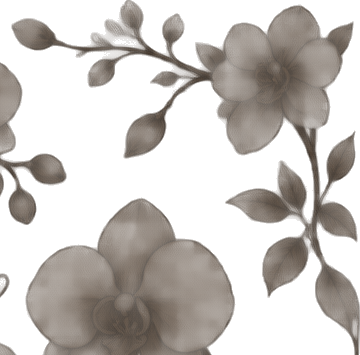
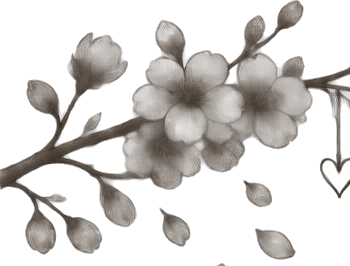
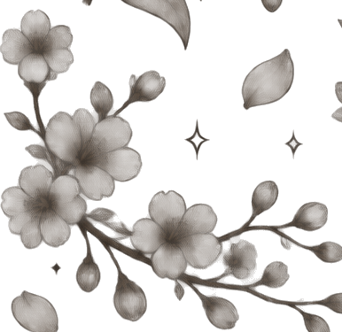
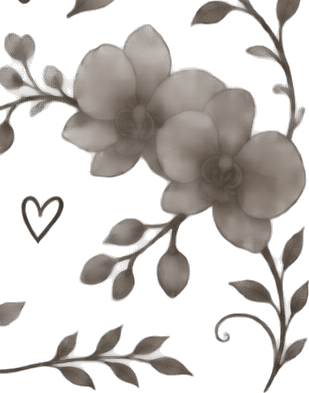
Una historia de amor
Carolina y Alexis
Aquello que Florece entre dos Corazones
♡
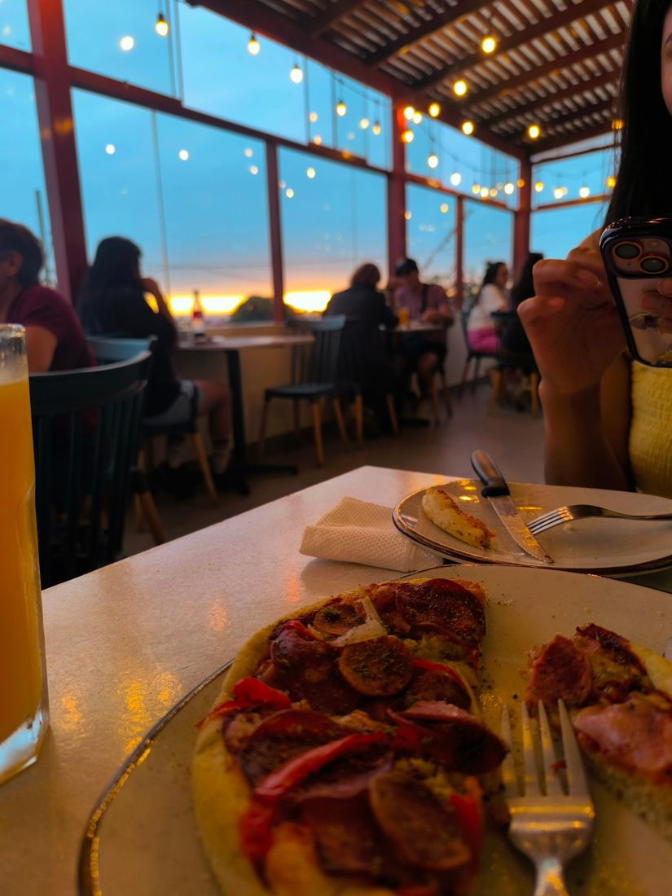
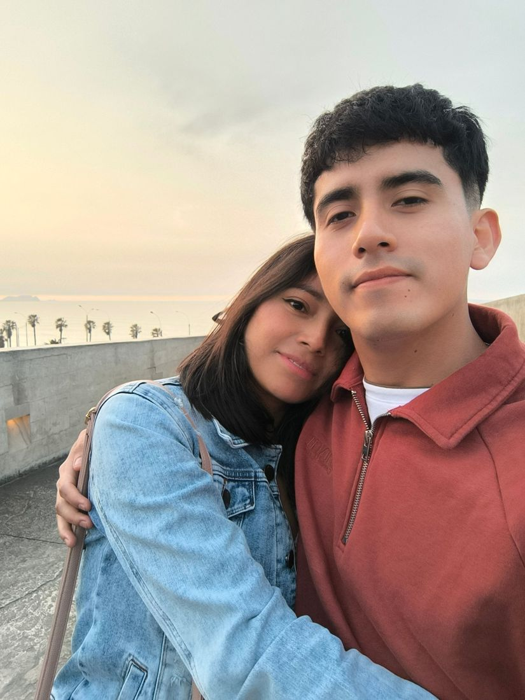
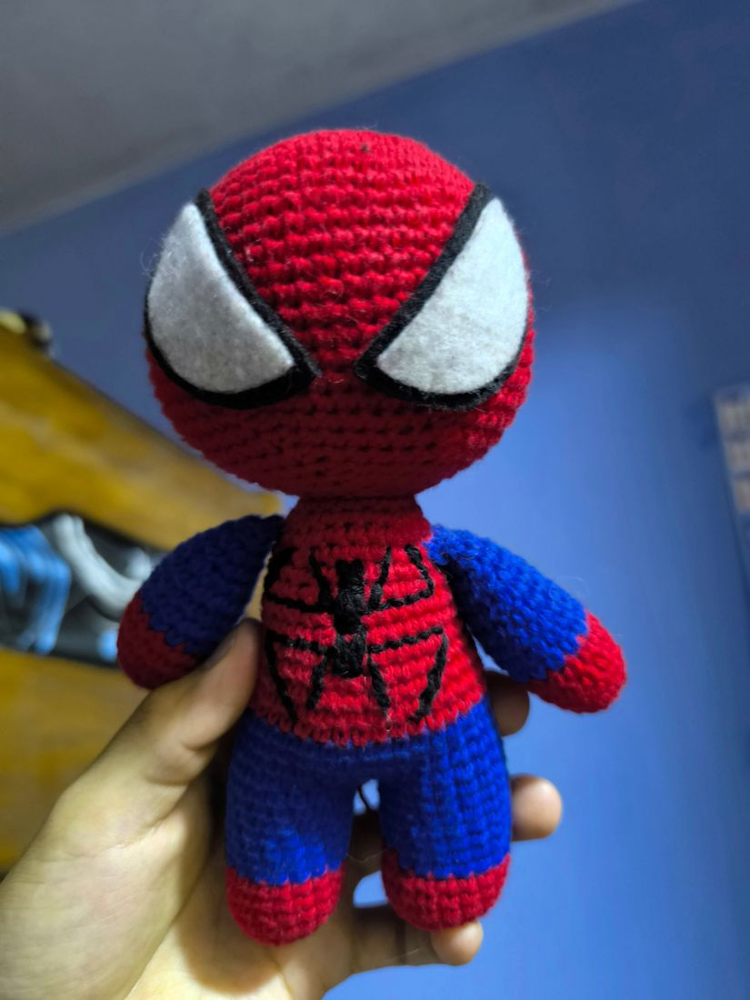
Porque contigo,
todo tiene más sentido…
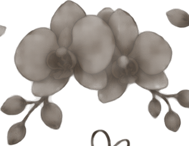
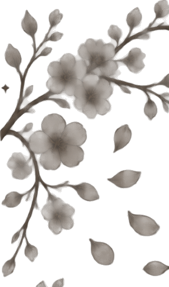
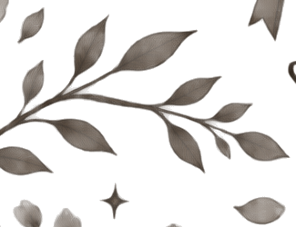
Índice
Capítulos
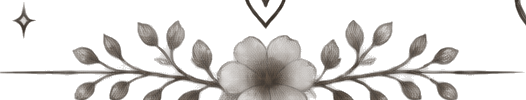
Capítulo I
Donde comenzó a florecer
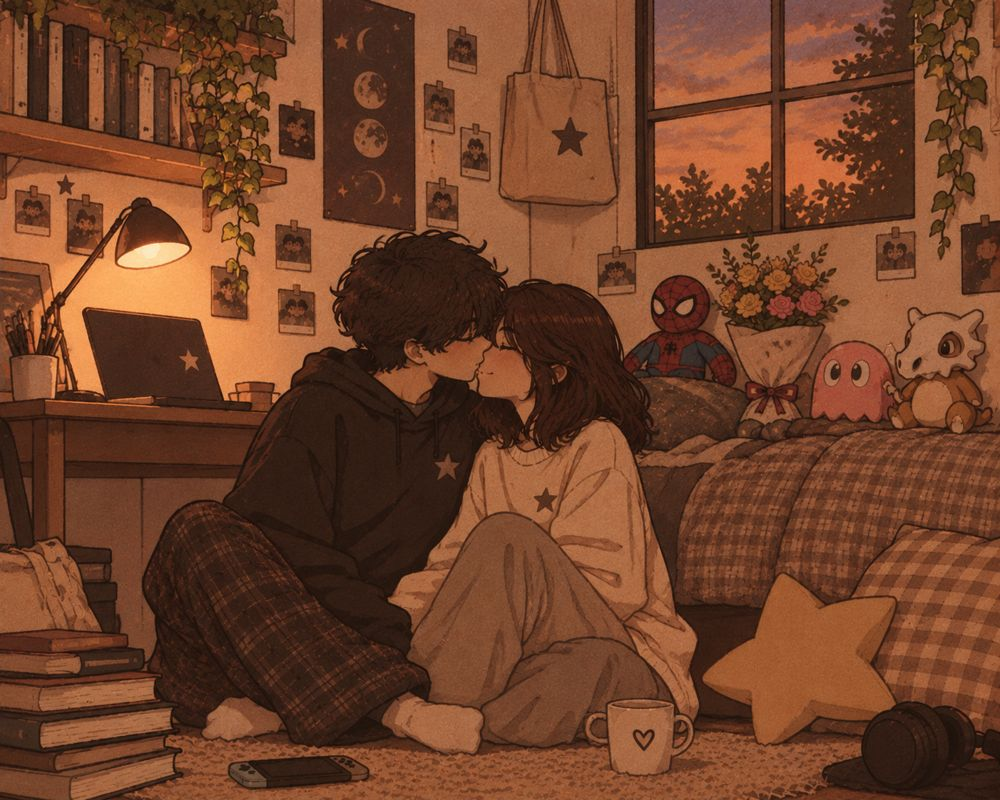
Nos conocimos en el trabajo, en áreas distintas. La primera vez que la vi no imaginé que se convertiría en mi todo, pero algo me llamó la atención desde el primer instante: una curiosidad que fui descubriendo y que me encantaba, era tan seria, que siendo sincero me costaba acercarme, tambien porque sentia que podia incomodar, pero hay situaciones que uno quiere arriesgar. Hablar con ella me ponia y hasta ahora nervioso. Cada vez que se iba, procuraba verla antes de que se marchara, porque salía unas horas más temprano que yo; no me importaba dejar cosas a medias con tal de conversar con ella, aunque fuera un momento. Después volvía corriendo a las tareas pendientes, pero acercarme a ella valía cada minuto.
Todavía recuerdo lo hermosa que se veía con sus lentes y cómo sonreía; esa sonrisa me sigue derritiendo hasta hoy. Pasaron algunas semanas y empezaron los gestos indirectos, de ambas partes, creo (jajaja). Hasta que hubo un momento en que me atreví y me acerqué: nos besamos. Enseguida llegó otro beso, con más pasión. Desde ese día sentí que venía todo lo bonito, aunque me parecía un sueño que de verdad estuviera pasando. Nunca pensé llegar tan lejos; solo tuve el atrevimiento de acercarme a hablarle, y no me arrepiento de nada.
Más adelante hubo complicaciones que siento que no fueron lo correcto, pero también fueron necesarias: cada uno tenía que esperar y no apresurar lo que aún no era su tiempo. Hoy, dos años después, más o menos, seguimos escribiendo nuestra historia.
Capítulo II
Aquella primera cita
Nuestra primera cita o salida, En ese momento verla llegar con ese vestido verde, y su acompañante perruno, fue hermoso, Guardo cada momento de ese día y hicimos que se sintiera cálido y acogedor. No hicimos nada de otro mundo: y eso es lo especial que ambos hacemos sin darnos cuenta. caminamos con su perrito y comimos helado de un señor que pasaba con su carrito, lo recuerdo bien. Hasta en ese instante todo me parecía irreal; quería que el tiempo se detuviera y que solo existiéramos ella y yo.
Después vinieron más salidas. Me gustaba conocerla un poco más cada vez, y ella me gustaba cada día más. Hasta hoy me regustas demasiado.
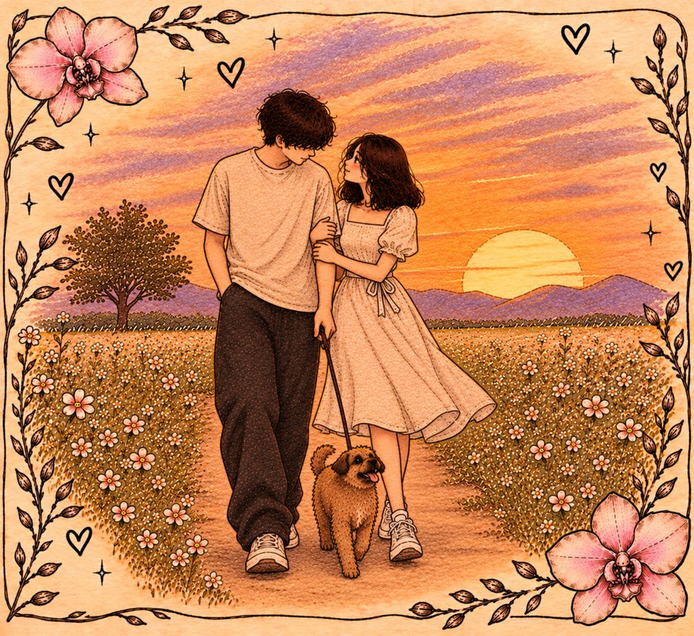
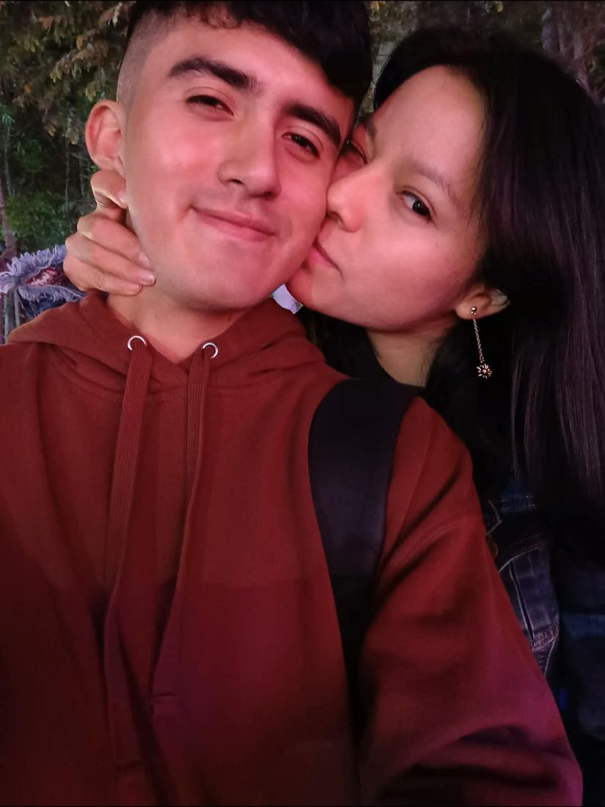
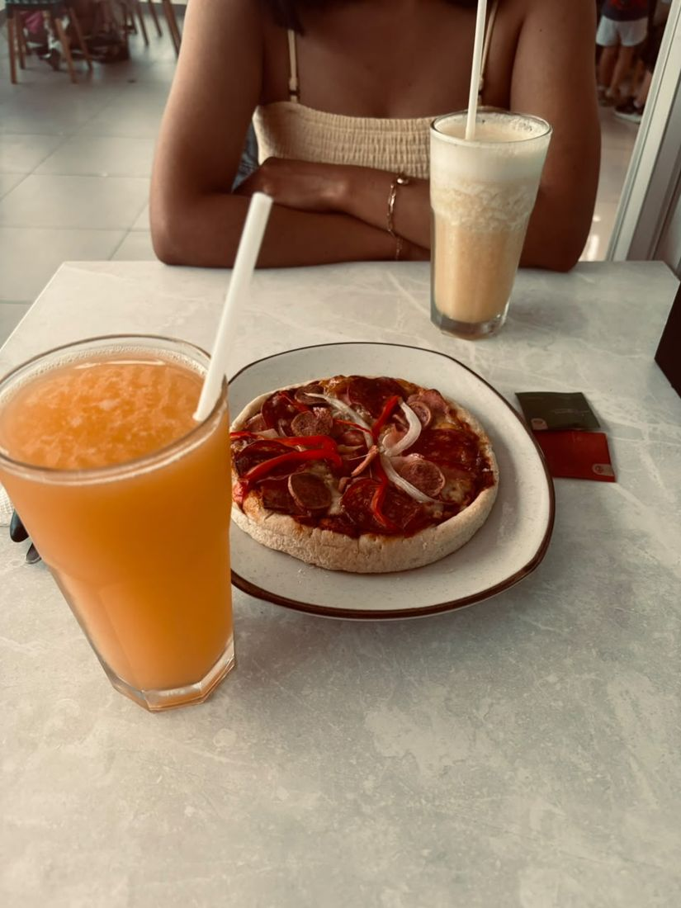
Capítulo III
Volver a encontrarnos
En todo el proceso de conocernos hubo dos veces en que nos distanciamos. La tercera vez que volvimos a darnos la oportunidad de seguir esta historia, fue complicado, con muchas dudas pero esas dudas se aclararon. Siento que todo eso tenía que pasar para llegar a lo que ella y yo sentíamos que debía ser: una relación más estable, más mutua y más madura.
Hoy le doy las gracias por aguantarme y por no irse aquella última vez. Ahora ninguno quiere irse; ninguno sabe lo que es no sentir, porque lo sentimos todo el uno por el otro. Y me gusta que, últimamente, tengamos planes cada vez más bonitos.
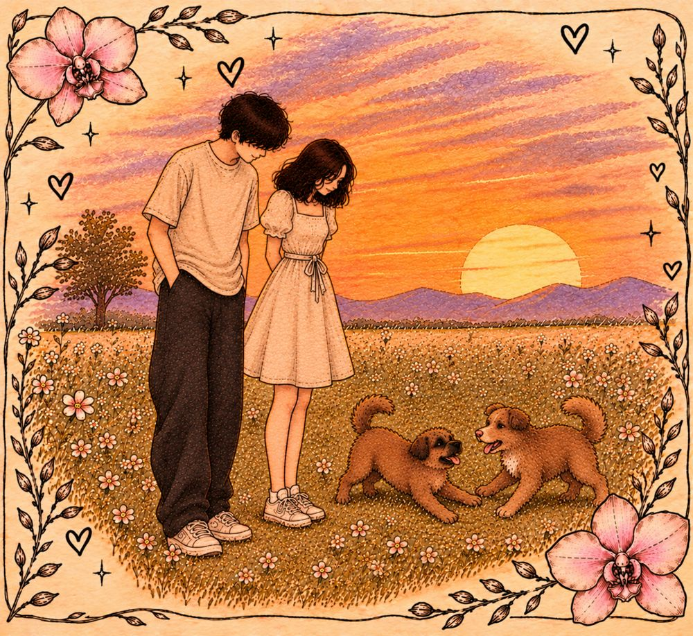
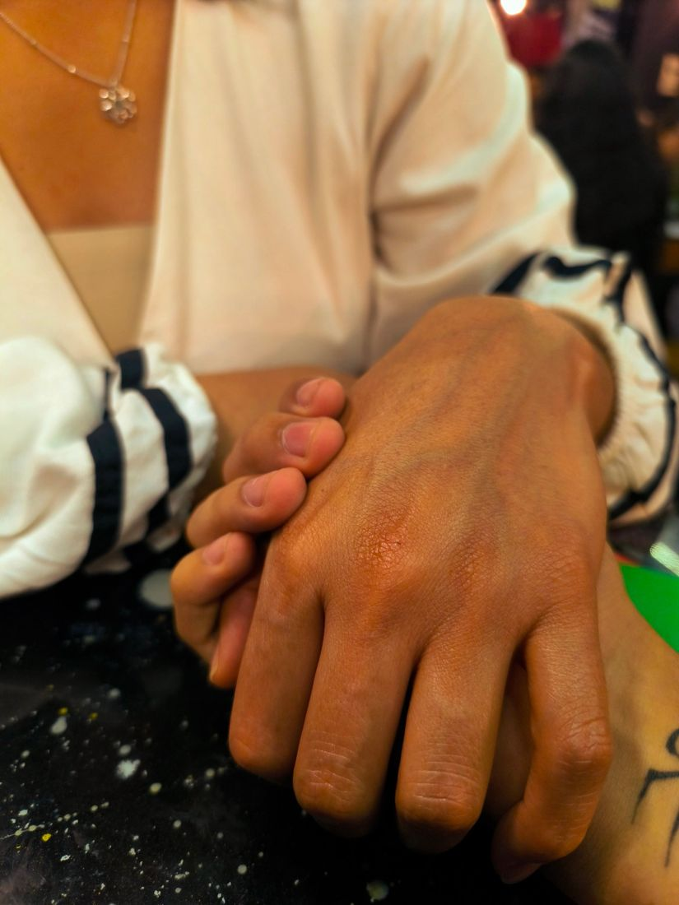
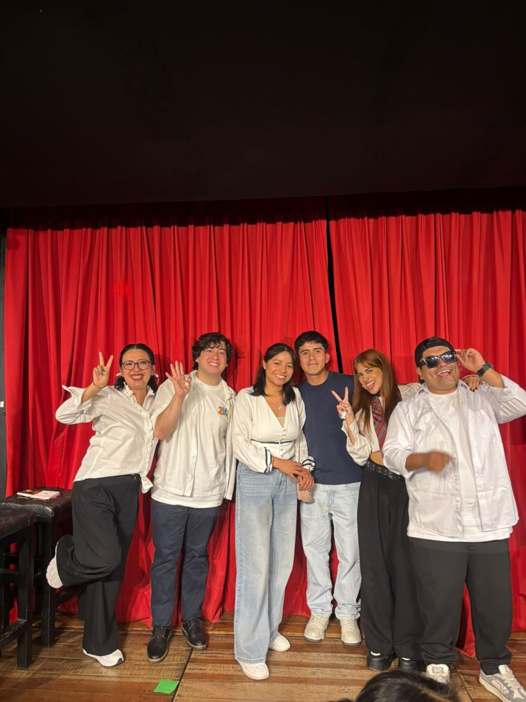
Reseña
Mi más bonita casualidad
Agradezco al universo por ponerla en mi camino, y por cada decisión del destino que ambos tomamos para que nuestro encuentro ocurriera en 2024. Siempre esperé a una chica así, y esa chica es ella. No me veo a futuro con nadie más: quiero que siga siendo ella, con todas sus evoluciones, de las que siempre me quiero enamorar. Siempre quiero seguir conociéndola.
Agradezco también las decisiones que ella tomó y los cambios que hizo en sí misma para darme esa versión de ella que yo necesitaba. Somos como el fuego y el agua. Quiero que sepas que te quiero un montón. Mientras escribo esto tengo mil emociones: eres mi gran reliquia, y quiero conservarte siempre.
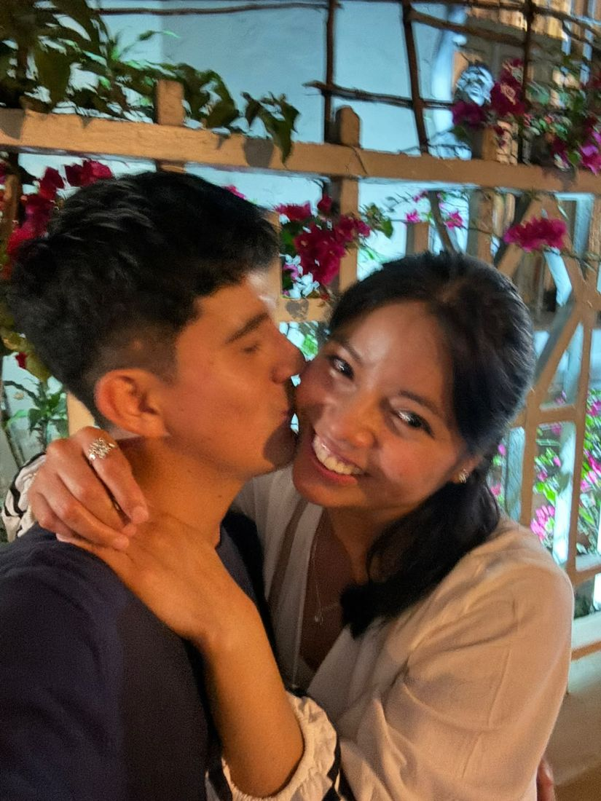
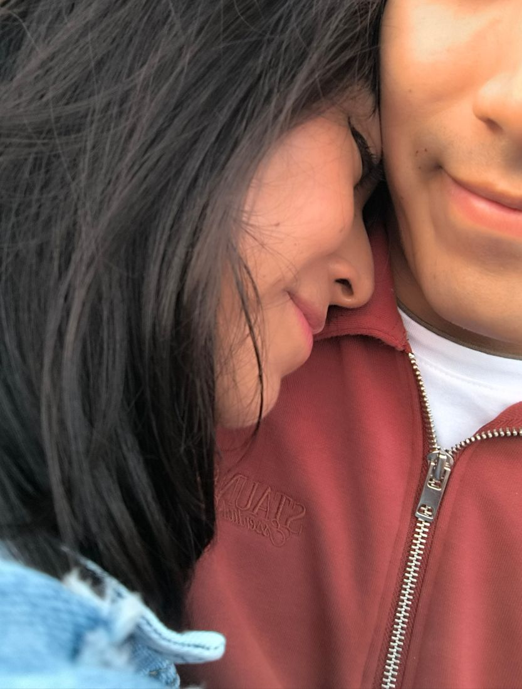
Último capítulo
Un lugar donde florecer juntos
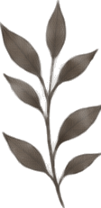
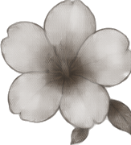
Me gustaría que, después de un plan tan bonito como este y otros panes que hemos tenido, el próximo sea un viaje juntos, como alguna vez lo te habia mencionado (Fue la vez que estuvimos leyendo el primer libro que te di de poesías): estar en el campo, tener un picnic lejos de todo, pasar la noche, vivir nuestros momentos de pareja, conocer lugares y tomar muchas fotos.
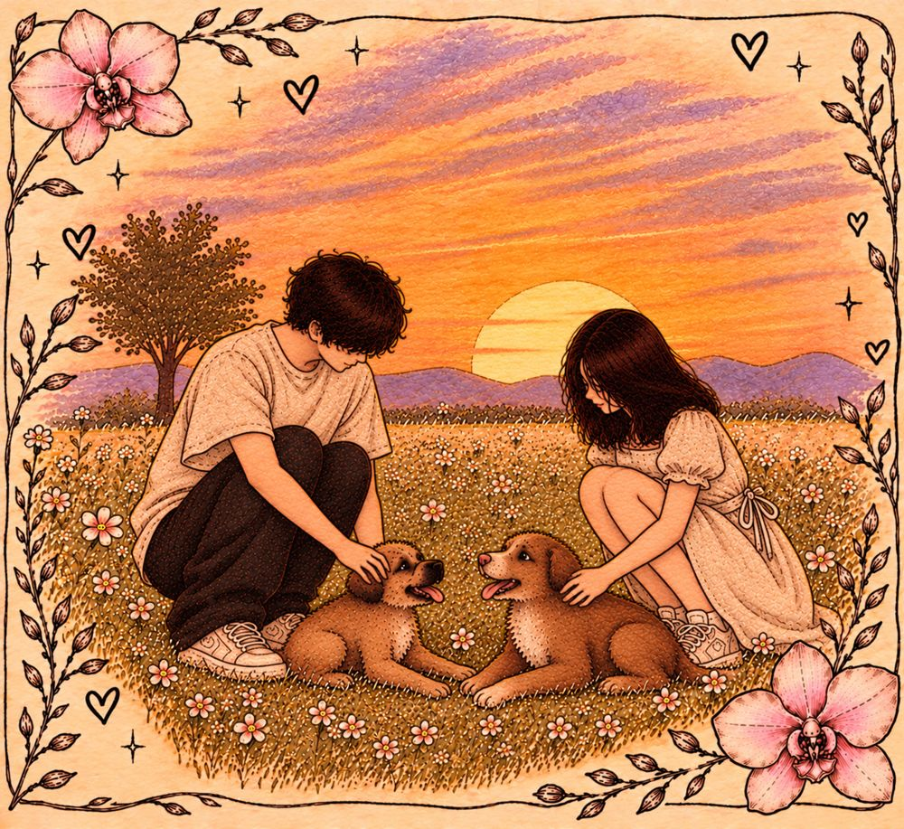
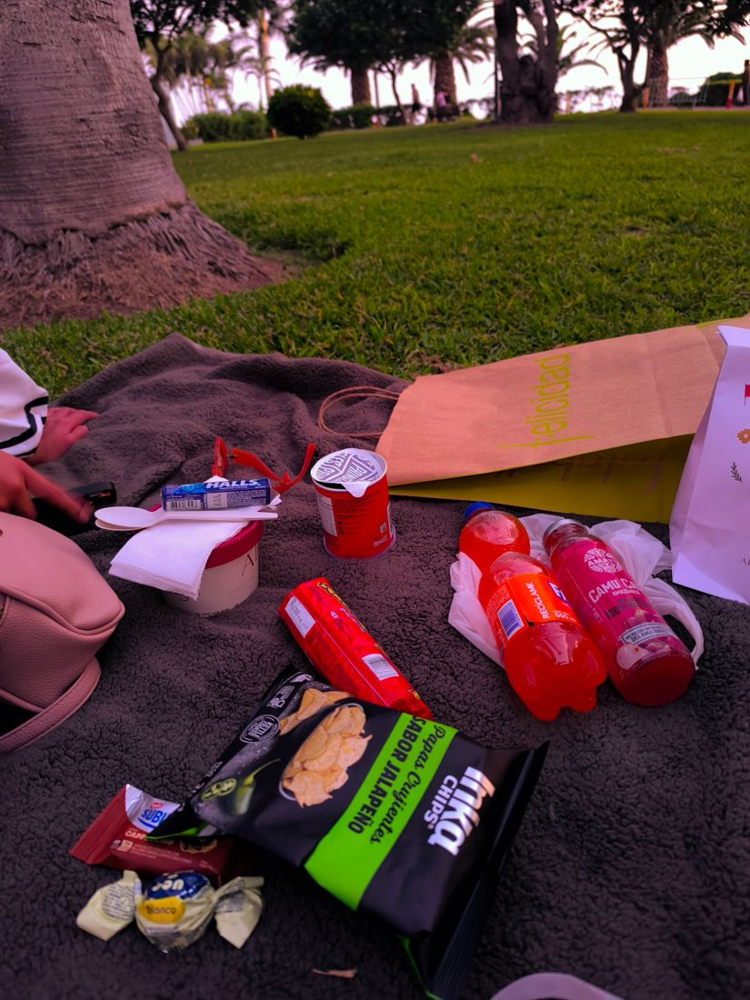
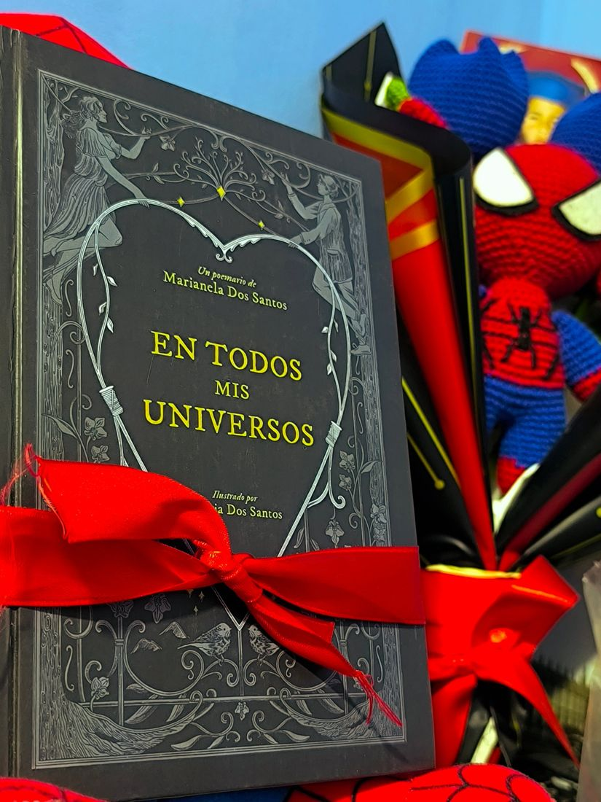
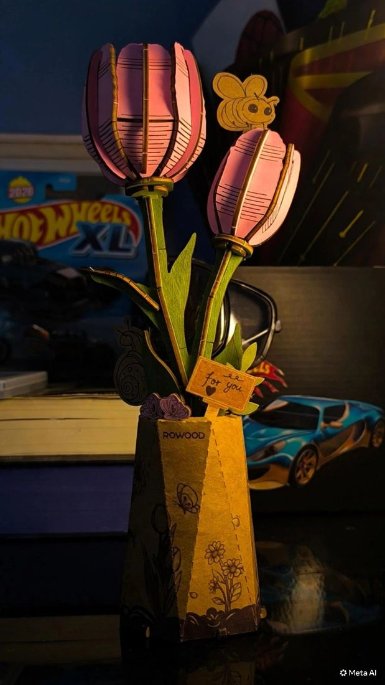
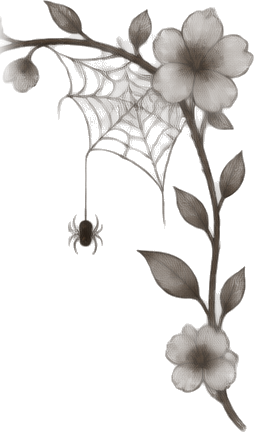
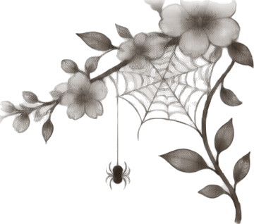
Para Carolina con mucho amor:
♡
Mi sentido arácnido dice que eres tú.
♡